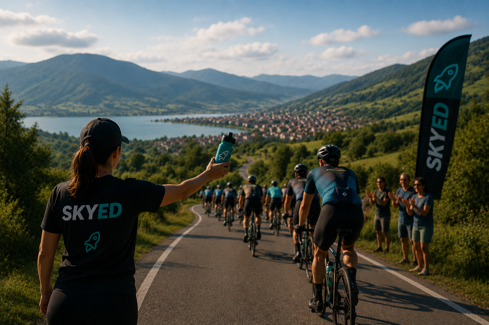
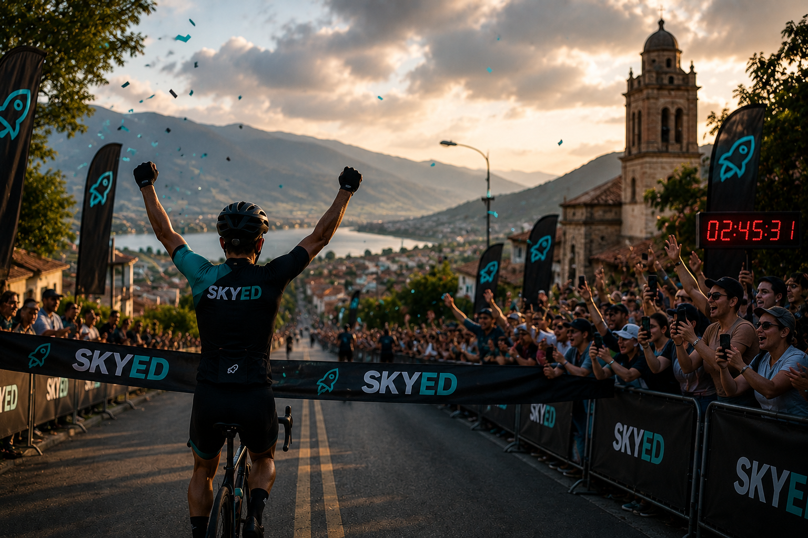
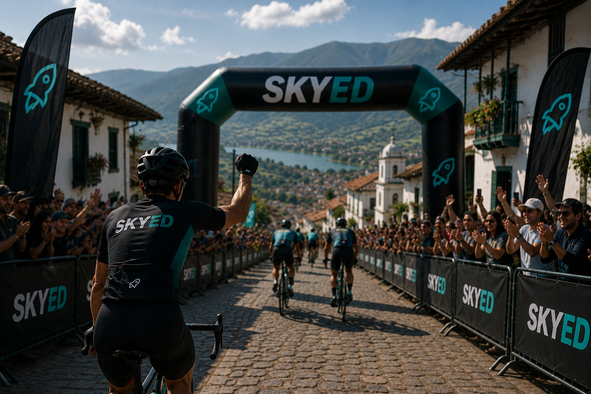

Sobre nosotros
En SKYED, somos apasionados por el ciclismo y estamos comprometidos a ofrecer la mejor experiencia para ciclistas de todos los niveles en Sogamoso, Boyacá.
Historia
Fundada en 2020, SKYED nació de la visión de crear una plataforma integral que conectara a ciclistas con eventos profesionales de ruta, MTB, gravel, pista y BMX. Nuestro equipo está formado por expertos en ciclismo, tecnología y organización de eventos, dedicados a brindar un servicio excepcional.
Creemos que el ciclismo es más que un deporte; es una comunidad vibrante que une a personas de todas las edades y habilidades. Por eso, nos esforzamos por ofrecer eventos seguros, emocionantes y accesibles para todos los ciclistas en Sogamoso, Boyacá.
Nuestra misión
Organizar y desarrollar eventos deportivos de ciclismo de alta calidad, promoviendo la disciplina, el trabajo en equipo y la pasión por el deporte. Nos enfocamos en brindar experiencias seguras, innovadoras y memorables para ciclistas, patrocinadores y espectadores, contribuyendo al crecimiento de la comunidad deportiva.
Nuestra visión
Para el 2030, queremos ser reconocidos como un referente en la organización de eventos de ciclismo, reconocida por su profesionalismo, innovación y compromiso con el desarrollo del deporte, creando experiencias que unan a la comunidad ciclista y promuevan un estilo de vida activo y saludable.
Linea del tiempo SKYED
Los momentos que nos han hecho crecer como comunidad ciclista.
Fundación
Nació SKYED en Sogamoso, Boyacá.
Primer evento
200+ ciclistas en el Gran Fondo.
MTB y Gravel
Nuevas disciplinas en la región andina.
10.000 ciclistas
Hito histórico en la plataforma.
Temporada récord
120+ eventos, líderes en LATAM.
¿Por qué SKYED?
Una experiencia completa para descubrir, inscribirte y vivir cada evento.
Eventos certificados
Trabajamos para ofrecerte una buena seguridad en tu recorrido. Te ayudamos a calcular tus tiempos y posiciones.
Soporte permanente
Contamos con un equipo listo para resolver cualquier inconveniente durante tu inscripción, en cada paso del camino.
Pago seguro
Usamos los más altos estándares de seguridad para proteger tu información personal y financiera en cada transacción.
Nuestros eventos mas destacados
Los eventos que han marcado la historia de SKYED.

Primer Gran Fondo
El inicio de todo. Una salida épica que marcó el comienzo de nuestra historia en las vías de Boyacá.

Debut MTB Boyacá
La expansión al mundo del MTB. Rutas técnicas y terreno salvaje para los más aventureros.

Gran Tour Andino
La edición más grande, con más de 800 ciclistas recorriendo los caminos más icónicos de los Andes.